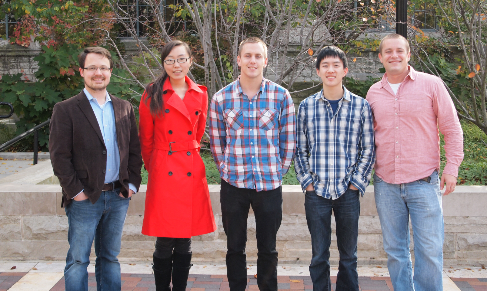

News
September - Alex Rosenthal joins the group as a postdoctoral researcher.
July - Han Gao and Jim Griffin win the 2014 Dow Sustainability Student Challenge Award for the project- "CANDO: Simultaneous Biological Nutrient Removal and Energy Generation from Wastewater"
April - Jim Griffin is selected as a 2014-2015 ISEN Cluster Fellow
September - Alex Rosenthal joins the group as a postdoctoral researcher.
July - Han Gao and Jim Griffin win the 2014 Dow Sustainability Student Challenge Award for the project- "CANDO: Simultaneous Biological Nutrient Removal and Energy Generation from Wastewater"
April - Jim Griffin is selected as a 2014-2015 ISEN Cluster Fellow
Welcome to the Wells Research Group
Our primary research interests are microbial nitrogen cycling and short-circuit biological nutrient removal processes, microbial ecology of engineered and natural settings, sustainable biological wastewater treatment, microbial greenhouse gas production, and resource and energy recovery from waste.